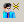
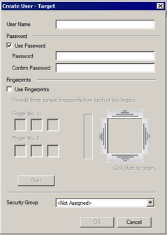

|
|
|
|
|
|
|
|
Each security group supports a maximum of 100 users.
When you create a new user, the user is added to the Project User List which is shared among all the targets in the project. When you want the user on a particular target only, assign the user to a user group associated with just that target. For more information, see Section 24.9.3, Upgrading Existing Projects to Include Fingerprints.
To create a security user:
In the Security Editor, click the New User icon to
open the Create User - Target dialog box.

In the User Name, enter a new name.
Select the Use Password check box to enable the user to log in using their password. Then, enter and confirm the password.
Select the Use Fingerprints check box to enable the user to log in using their fingerprints. Then, capture and store their fingerprints. For information on how to capture fingerprints, see Section 24.9.2, Capturing Fingerprints.
In the Security Group, you can select the security group that the user belongs to. Choose <Not Assigned> if you do not wish to assign the user to a security group.
Click OK to add the user.

Property |
Description |
User Name
|
Create a user name and password using the following rules:
|
Password |
|
Use Password |
Select to enable the user to register their password. |
Password and Confirm Password |
Enter and confirm the user's password. |
Use Fingerprints |
Select to enable the user to log in using their fingerprints. You can capture and store the user's fingerprints using a Biometric Switch. For more information, see Section 24.9, Biometric Switch. |
Security Group |
From the list, you can select the user's security group. |